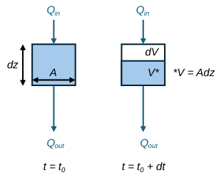
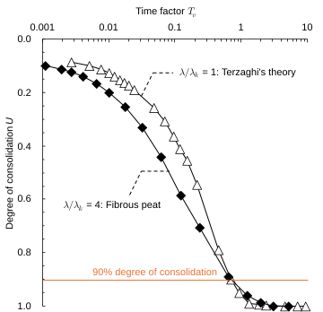

Ch3.3.1
Primary consolidation

Primarily, the time-dependent deformation of soils is attributed to the soil-water coupling effect, which highlights the necessity of considering both hydraulic and mechanical properties in modelling. In this section, a general form of 1-D consolidation equation is derived based on the schematic shown in Fig. 3.3.1. Solutions of the derived nonlinear 1-D consolidation equation are then presented to discuss the hydro-mechanical characteristics of peats.
The infinitesimal volumetric change $\mathrm{d}V$ of an element during a small time interval $\mathrm{d}t$ is described, from the definition of volumetric strain $\mathrm{d}\varepsilon_v$, as:
The inflow and outflow of pore water, $Q_{in}$ and $Q_{out}$, are expressed using pore-water velocity $v$. Assuming (i) the pore space is fully saturated and (ii) both soil particles and pore water are incompressible, the volumetric change equals the net outflow:
The additional three components required to derive the simplest form of consolidation equation are Darcy’s law, the effective stress principle, and the coefficient of volume compressibility:
Here, $k$ is permeability of soil, $\gamma_w$ the unit weight of pore water, and $u$ pore-water pressure. Note that infinitesimal deformation is assumed; therefore, the strain measure is $\varepsilon_v$, rather than $\varepsilon_{nv}$. Substituting Eqs. (3.3.6)–(3.3.8) into Eq. (3.3.5) yields:
In Terzaghi’s theory, both $k$ and $m_v$ are assumed constant; thus, $c_v$ remains constant. In reality, soil exhibits state dependency in both permeability and compressibility. To express this, the following relationships are adopted:
Here, $e_{ref}$ and $k_{ref}$ are reference values. Substituting Eqs. (3.3.11) and (3.3.12) for the NC range into Eq. (3.3.10) and differentiating $c_v$ with respect to $\sigma'_z$ yields:
This indicates that $c_v$ evolves (or decreases) during primary consolidation. For clays, $\lambda/\lambda_k\simeq1$; therefore, the relationship reduces to that in Terzaghi’s theory. For peats, Hayashi et al. (2008) reported:
For fibrous peat with a high organic content (i.e., $L_i=95\%$), $C_c/C_k\simeq4$. Using this value, the nonlinear consolidation equation was solved via an explicit finite-difference scheme. Fig. 3.3.2 shows the obtained consolidation curve $U$–$T_v$, where $U$ is the degree of consolidation:
Here, $\left.c_v\right|_{U_{ref}}$ is the coefficient of consolidation corresponding to $U=U_{ref}$, $L_D$ is the effective drainage length, and $t$ is elapsed time. Here, $L_D=0.02\,[\mathrm{m}]$ and $U_{ref}=0.9$ are adopted. The results indicate that the shape of the consolidation curve is governed by $\lambda/\lambda_k$. For fibrous peats, if $c_v$ is determined conventionally from the time required for $U=0.9$, the early stage of consolidation ($U<0.9$) is significantly underestimated by Terzaghi’s theory. Also, as Eq. (3.3.14) is nonlinear, such an underestimation should be scale-dependent, highlighting the need for numerical analyses even for one-dimensional problems.
